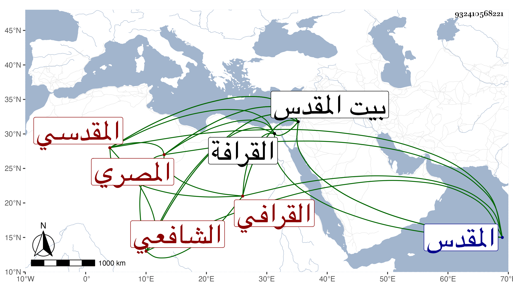

0902Sakhawi.DawLamic.ITO20230111-ara1.EIS1600.932410568221
Biography ID: 932410568221
449
أحمد بن محمد بن عماد بن علي الشهاب أبو العباس القرافي المصري ثم المقدسي الشافعي والد المحب محمد المذكور في أواخر القرن قبله ويعرف بابن الهائم . ولد في سنة ست وخمسين وسبعمائة كما جزم به الفاسي وابن موسى وغيرهما وتردد شيخنا في معجمه بينه وبين ثلاث وخمسين وجزم بالثاني في أنبائه بالقرافة وسمع في كبره من التقي بن حاتم والجمال الأميوطي والعراقي ونحوهم واشتغل كثيرا وبرع في الفقه والعربية وتقدم في الفرائض ومتعلقاتها وارتحل إلى بيت المقدس فانقطع به للتدريس والإفتاء وناب هناك في تدريس الصلاحية عن الزين القمني مدة بل ولي نصفه شريكا للهروي ودرس بأماكن وانتفع به الناس واستمر كذلك حتى مات بل جهز له القمني مرسوم الخليفة بانفراده به فعورض وكان خيرا مهابا معظما قواما بالحق علامة في الفقه وفرائضه والحساب وأنواعه والنحو وإعرابه وغير ذلك انتهت إليه الرياسة في الحساب والفرائض وجمع في ذلك عدة تآليف عليها معول من بعده كالفصول في الفرائض وهو نافع وترغيب الرائض في علم الفرائض والجمل الوجيزة في الفرائض والأرجوزة الكبرى الألفية في الفرائض المسماة بالكفاية والصغرى المسماة النفحة المقدسية في اختصار الرحبية في الفرائض والفصول المهمة في علم مواريث الأمة والمعونة في صناعة الحساب الهوائي ومختصرها الأول المسمى بالوسيلة والثاني المسمى بالمبدع وأيضا اللمع المرشدة في صناعة الغبار ومختصرها نزهة النظار في صناعة الغبار ومختصر تلخيص ابن البنا المسمى بالحاوي وشرح الياسمينية في الجبر والمقابلة والمنظومة اللامية في الجبر أيضا من بحر البسيط وأخرى لامية من بحر الطويل المسماة بالمقنع وشرحها الكبير المسمى بالممتع في شرح المقنع والمختصر المسمى بالمشرع وكذا له في الفقه شرح قطعة من المنهاج في مجلد وقفت عليه والعجالة في حكم استحقاق الفقهاء أيام البطالة وغاية السول في الإقرار بالدين المجهول والمغرب عن استحباب ركعتين قبل المغرب وجزء في صيام ست شوال والتحرير لدلالة نجاسة الخنزير ورفع الملام عن القائل باستحباب القيام ونزهة النفوس في بيان حكم التعامل بالفلوس وفي الأصول ونحوه اللمع في الحث على اجتناب البدع وتحقيق المنقول والمعقول في نفي الحكم الشرعي عن الفعال قبل بعثة الرسول ومختصر اللمع للشيخ أبي إسحاق في الأصول وله في العربية الضوابط الحسان فيما يتقوم به اللسان التي صارت علما على السماط وشرحها شرحا حسنا والقصيدة الميمية التي هي من بحر البسيط نظم السماط وعدتها ثلثمائة وخمسون بيتا ونظم قواعد الإعراب لابن هشام وسماه تحفة الطلاب وشرحها شرحا مطولا في مجلد ومختصرا وخلاصة الخلاصة في النحو والتبيان في تفسير غريب القرآن وغير ذلك وقال فيما قراته بخطه إن الذي لم يكمل منها شرح الجعبرية في الفرائض وشرح الكفاية في الفرائض أيضا وقد قارب الفراغ وهو ثلاثة أجزاء ضخمة والعقد النضيد في تحقيق كلمة التوحيد كتب منه ثلاثين كراسا وتحرير القواعد العلائية وتمهيد المسالك الفقهية والبحر العجاج في شرح المنهاج وشرح الخطبة خاصة منه في عشرين كراسا في قطع الكامل من مسطرة خمسة وعشرين وقطعة جيدة من التفسير إلى قوله فأزلهما الشيطان عنها وإبراز الخفايا في فن الوصايا والعجالة في حكم استحقاق الفقهاء أيام البطالة وتعاليق على مواضع من الحاوي وله تعريض في أحمد بن يوسف بن محمد بن السيرجي وسارت بمؤلفاته وفضائله الركبان وتخرج به كثير من الفضلاء ورحل إليه من الآفاق وأخذ الناس عنه طبقة بعد أخرى ورأيته كتب للعماد بن شرف إجازة حافلة ولقيت جمعا من أصحابه وكتب لشيخنا على استدعاء أجزت لهم وإن لم أكن بصفات المطلوب منهم الإجازة متصفا وقال في تاريخه اجتمعت به في بيت المقدس وسمعت من فوائده . مات في العشر الأخير من جمادى الآخرة كما قاله المقريزي ونحوه قول شيخنا في أنبائه ولكنه قال في معجمه في رجب وهو الذي مشى عليه المقريزي في عقوده مع اختصاره لترجمته قال وله بي اجتماع في المقدس وقربه ابن موسى بالعشر الأوسط منه سنة خمس عشرة بعد ان أثكل ولده المشار إليه وكان نادرة عصره فصبر واحتسب ، وممن روى لنا عنه الزين ماهر والتقي القلقشندي وسمع منه الأبي ثلاثيات البخاري وبعض التحرير والمغرب وصيام ست شوال وابن يعقوب بعض نظم قواعد الإعراب وشرحها .
